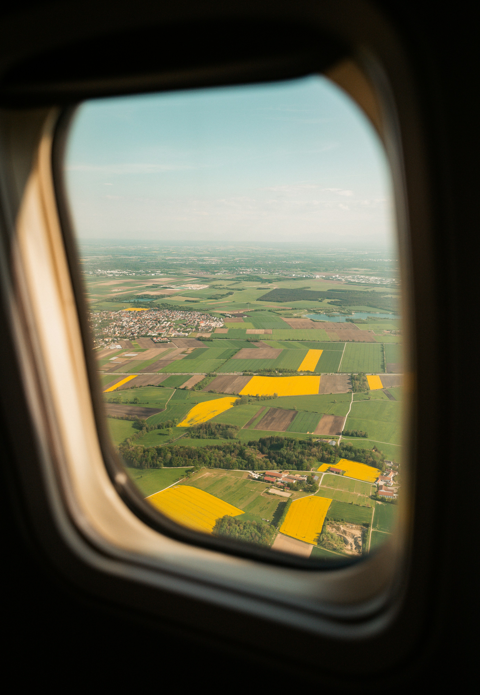

Фритрек и нулевой спринт: Подготовка к работе
</HTML>

Это было самое начало пути. На этом этапе важно было проникнуться основами и настроиться на учёбу. И, возможно, подумать, как новые знания могут повлиять на ваше будущее.
В жизни каждого из нас приходит момент, когда мы решаем начать обучение. Это может быть как первый шаг в новой профессии, так и просто желание расширить свои границы знаний. Независимо от причин, это всегда вызывает определенную тревогу и неопределенность. Но в то же время, это самое начало, которое может привести к огромным достижениям и успехам